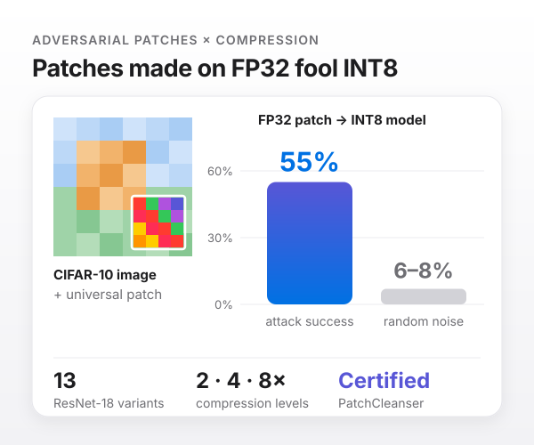
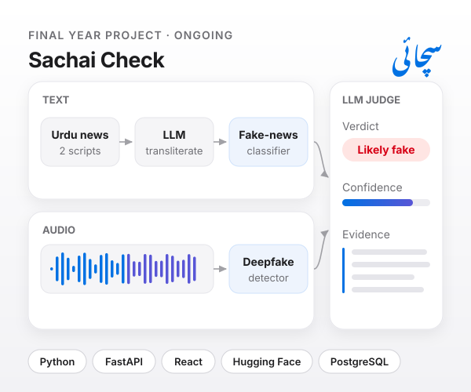
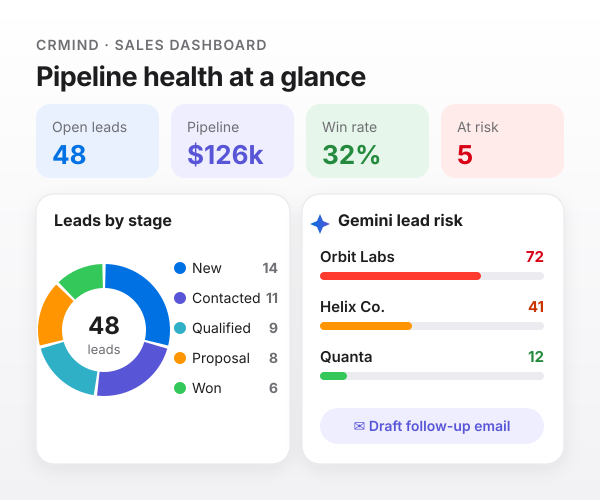
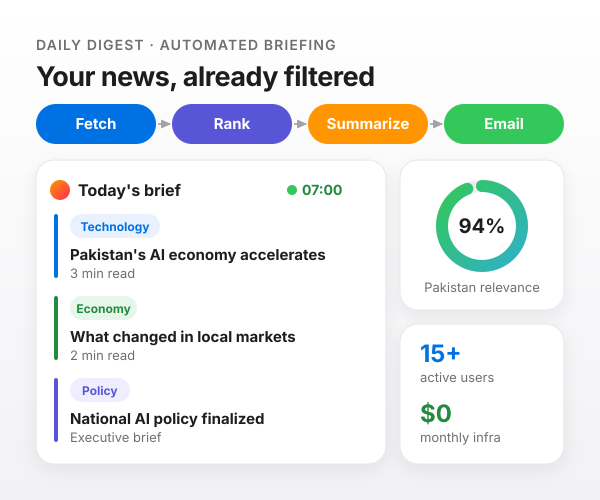

Multilingual & Low-Resource NLP
Cross-lingual transfer, tokenization pathologies and bi-script dynamics across Nastaliq and Roman Urdu. Building representative datasets where high-resource assumptions break down.
Final-year Computer Science student at FAST-NUCES, Lahore. I investigate empirical model robustness, design resilient data pipelines, and deploy production software that performs when the domain shifts.
That question pulled me into computer science, then into machine learning. Today I study why models fail when the data shifts, across scripts, domains, compression and markets, and I build the systems that have to survive it.
I work wherever the problem needs me: researcher, data scientist, AI/ML engineer, forward-deployed engineer, or full-stack builder. I shape data, evaluate models, design APIs, ship interfaces, and deploy systems end to end.
“Make the complex feel inevitable: a model that earns trust, a product that reaches people, a system that keeps working.”
New scripts, new domains, smaller models, volatile markets. I study where models break under real-world shift, what shortcuts they take instead of learning the task, and how to make them transfer reliably.
Cross-lingual transfer, tokenization pathologies and bi-script dynamics across Nastaliq and Roman Urdu. Building representative datasets where high-resource assumptions break down.
Evaluation beyond static leaderboards: isolating benchmark artifacts, prompt sensitivity, and reproducible protocols.
Parameter-efficient adaptation (LoRA/QLoRA) and domain-targeted instruction tuning for specialized, low-latency models.
Measuring how performance decays out of distribution, with guarded baselines that separate real invariance from memorization.
Diagnosing spurious cues such as article length or punctuation that models exploit instead of the actual task.
Zero-shot transfer across corpora built for the same task, exposing when models fail to move between dataset creators.
What pruning, quantization and distillation do to a model's vulnerability to adversarial patches, and how much certified robustness survives compression. Small models get deployed; their attack surface should be measured, not assumed.
Representation reuse from multilingual foundation models into low-resource dialects and specialized downstream tasks.
Learnable gating and hybrid recurrent-transformer designs that adaptively fuse heterogeneous data streams.
Regime-aware forecasting that conditions temporal models on market volatility to avoid recall collapse.
Preprints and papers in preparation on domain robustness, adversarial robustness of compressed models, benchmark shortcut learning, and regime-aware multimodal fusion.
A 26-dataset, 188,309-example benchmark in Nastaliq and Roman Urdu, released as 7 transfer matrices over 4 task types with cluster-aware splits that stop near-duplicate leakage. Across 80 domain shifts, fine-tuned encoders lose 13.5 to 47.6 macro-F1, while few-shot LLMs win 30 of 42 Holm-corrected comparisons.

Does Compression Preserve Adversarial Patch Robustness? An Empirical and Certified Study of Pruned, Quantized, and Distilled CNNs
How pruning, quantization, distillation and smaller dense networks change a CNN's vulnerability to adversarial patches and its PatchCleanser certified robustness, across a zoo of 13 ResNet-18 models on CIFAR-10 at 2x, 4x and 8x compression. Patches made on the full-precision model fooled the INT8 model 55% of the time, against 6–8% for random noise.

A zero-shot cross-dataset transfer study across Urdu fake news, English fake news, and sarcasm detection. Fake articles in one Urdu dataset run 3.4x longer than real ones: train one way and macro-F1 is 0.771; reverse the split and it collapses to 0.005. Models learn length, not deception.

RAML introduces a learnable sigmoid gate that conditions the fusion of FinBERT-scored Reddit sentiment and BiLSTM-encoded OHLCV features on rolling 24-hour market volatility. While static concatenation causes 6-hour recall to collapse to 0.14 under volatility spikes, the RAML gate preserves robust predictive power.

Hands-on work across research labs, healthcare AI, production software teams, and automated AI systems.
AI in Healthcare Management
FAST School of Management · Lahore, Pakistan
Urdu NLP
FAST School of Computing · Lahore, Pakistan · Supervised by Dr. Maryam Bashir
Enterprise AI & .NET
QuickFuel · Lahore, Pakistan
LLM Agents & RAG
Optimus Automate · Remote
Selected production builds, RAG pipelines, autonomous systems, and evaluation benchmarks.
01 / Sachai Check · Final Year Project
Sachai means truth. Sachai Check detects Urdu fake news across domains and deepfake audio in two pipelines, with an LLM transliterating Roman Urdu first. An LLM judge backs each verdict with evidence and a confidence score instead of a bare real/fake label.

02 / TaxChronos · 2026
Pakistani tax queries mix English and Urdu in the same sentence, and manual document search took 2 to 3 minutes per question. A RAG pipeline on Qdrant and Gemini answers in under 20 seconds, scored with RAGAS against a naive-retrieval baseline.
Based on the Federal Board of Revenue (FBR) Circular 2024-25, the applicable slab for your income bracket is 15% with a basic exemption up to PKR 600,000.
Sources: FBR Circular No. 01/2024-25 §4(b), Income Tax Ordinance 2001 §149
03 / CRMind · 2026
Sales CRM with JWT auth, a 5-stage drag-and-drop pipeline and a 4-KPI dashboard. Gemini rates lead risk 0–100, drafts emails and reviews pipeline health, with a 30s timeout and fallback model.

04 / Daily Digest · 2026
An unattended fetch, rank, summarize, and email pipeline with a Pakistan-relevance ranking function, live on free-tier infrastructure with per-user delivery scheduling.

05 / Urdu Robustness Benchmark · 2026
An open benchmark of 26 Urdu datasets in two scripts, 188,309 examples across four task types. Fine-tuned encoders and few-shot LLMs tested on 80 domain shifts, with cluster-aware splits and shortcut audits built in. Fine-tuned models drop up to 47.6 macro-F1 off their home domain; few-shot LLMs hold up far better.
06 / WhisperBench · 2026
Whisper Tiny, Base, and Small evaluated zero-shot on 327 code-mixed Urdu-English recordings from 11 speakers. Switch Point Error Rate isolates mistakes precisely at language-switch boundaries.
Acoustic Audio Stream · 00:03.42
✓ Switch point boundary localized at 00:01.18 · 0.899 WER
07 / FinSight · 2025
A weighted multi-factor risk engine: isolation forest, HMM behavioral states, and an NLP transaction analyzer. CSV in; dashboard and PDF, CSV, Excel out.
One disciplined thread: frame the constraint, architect data and models in unison, then deploy reliable systems designed to run unattended.
Understand the real user bottleneck, data schemas, and non-functional constraints. Inquisitive listening, not premature pitching.
Written architecture document: API contracts, data pipelines, model benchmarks, and definitive definitions of done.
Clean modular code, vector stores, models, and interfaces. Rapid iterations with continuous checkpoint reviews.
Stress testing on live distribution shifts, edge-cases, and confound audits. If it can break quietly, I catch it first.
Containerized, documented, and deployed with full telemetry, CI/CD pipelines, and seamless handover.
Production-proven technologies across machine learning, backend pipelines, and modern web interfaces.
Rigorous computer science fundamentals and engineering leadership at Pakistan's premier computing university.
National University of Computer & Emerging Sciences, Lahore
Key Highlights & Leadership:
Verified professional credentials in machine learning, generative AI, LLM engineering, and data analysis.
Comprehensive LLM engineering, fine-tuning with QLoRA, advanced RAG architectures, and autonomous multi-agent systems.
Supervised and unsupervised algorithms, regression, classification, clustering, and scikit-learn statistical pipelines.
Advanced data wrangling, exploratory data analysis, statistical modeling, and visualization libraries.
Foundation models, attention mechanisms, large language model architectures, and ethical AI deployment.
Open to research collaborations, AI/ML engineering, forward-deployed positions, and ambitious software builds.